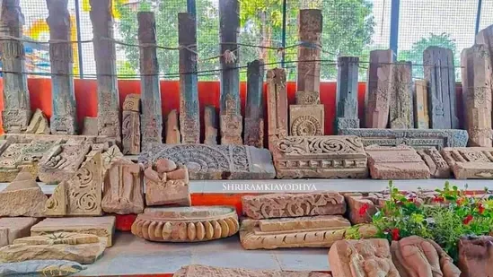

Ancient Ayodhya: History, Archaeology and Spiritual Heritage
Ayodhya, referred to in classical sources as 'Saket', is more than a pilgrimage destination. It is a palimpsest of riverside ritual, domestic life and temple-building traditions. This article brings together historical scholarship, archaeological findings and local memory to help you see Ayodhya not just as a visitor but as a witness to its living heritage.
Ayodhya's significance in the present day
For centuries Ayodhya has been a meeting point of devotion and history. Perched on the banks of the Saryu River, the city is stitched together by ritual ghats, seasonal festivals and temple architecture. Known in older texts as 'Saket', for many residents it is home — a place where collective memory and living ritual form a continuous civic fabric.

The river is more than a geographic feature; it is the spine of ritual life. Walk the ghats at dawn and you see the city’s layers — priestly chants, market vendors, fishermen, old houses and new temples — all meeting at the water’s edge.
Ayodhya as Saket — ancient references
Classical inscriptions and literary sources mention a city called 'Saket' — an urban centre of kingship and religious activity. Descriptions from travelers and epic poetry recall Ayodhya as the capital of Kosala. Epigraphic and textual references anchor a long cultural memory, but for archaeologists the task is to read Ayodhya as a layered landscape where river bends and political change have reshaped settlement patterns.
For historians, this means treating Ayodhya not only as an idea in literature but as an archaeological field, where stratified deposits reveal episodes of occupation, rebuilding and ritual practice.
Ayodhya in the Ramayana
The Ramayana positions Ayodhya as a moral and ritual centre — a city where kingship, dharma and household life intertwine. Temple rituals and seasonal celebrations continue to echo epic motifs. Reading the epic alongside material evidence makes it clear that the Ramayana is part of cultural memory, its expression evolving across time.
An archaeological perspective: settlements and material culture
Excavations in and around Ayodhya have revealed stratified occupations, pottery styles and structural remains that attest to many centuries of human settlement. Archaeologists have found post-holes, brick foundations and terracotta assemblages that indicate both ritual and day-to-day activities. Deeper layers often point to continuity, while surface layers reflect rebuilding and modern interventions.
Fieldwork follows strict stratigraphic methods: layers are separated carefully so later narratives do not overwrite the material record. The district museums preserve pottery, beads, brickwork and small craft objects that help build a relative chronology for the site.

Temple architecture: stone, space and memory
Ram Mandir
The current Ram Mandir reflects centuries of devotion and recent reconstruction. Its craftwork shows canonical temple proportions — sanctum, mandapa and richly carved exterior walls. Look for sculpted panels, floral ornament and geometric friezes that nod to North Indian temple idioms.

Hanuman Garhi
Situated on a raised scarp, Hanuman Garhi's vertical presence marks a defensive visual point. Climbing its steps is part of the devotional circuit: the ascent demarcates the transition from the bustle of bazaars to a controlled sacred precinct.

Kanak Bhawan and Nageshwarnath
Kanak Bhawan's interior recalls palatial sanctity, with narrative reliefs and ritual spaces that emphasize domestic piety. Nageshwarnath preserves older continuities: layered platforms, compact altars and restrained surface carving that signal long-term use.
Dashrath Mahal and the Ram Ghats
Dashrath Mahal belongs to the urban-religious ensemble; the Ram ghats — stepped approaches to the river — connect ritual bathing with public performance. Bathing, offerings and the evening aarti follow a theatrical sequence that stages devotion on the riverbank.
Local legends, narrative life and living memory
Local tales animate built spaces. Stories about Kanak Bhawan’s golden gifts conjoin domestic life with royal legend; Hanuman Garhi is remembered as the city's guardian. In many tales the Saryu is both witness and actor — hiding and revealing memories and sustaining ritual continuity despite changing cityscapes.
What the visitor experiences: walking Ayodhya
Walk slowly: the city rewards step-by-step attention. Visit ghats before dawn, thread narrow lanes to small temple courtyards, pause at thresholds and watch craftsmen at work. Photographers will find the Saryu's morning light and the weathered textures of old temples especially compelling. Local markets sell sweets and handicrafts — brief encounters that linger longer than guidebook descriptions.

Experience the Saryu Aarti in the evening — it composes silence, sound and flame into an expression of local devotion.
Pilgrim guide: practical advice
- Best time to visit: October–March — clear skies and comfortable temperatures.
- Two-day suggested itinerary: Day 1 — Ram Mandir, Kanak Bhawan, Hanuman Garhi, Dashrath Mahal, evening Saryu Aarti. Day 2 — Nageshwarnath, Mani Parvat, Tulsidas memorial, local markets.
- Cab advice: Local AC family cabs and tempo travellers are available — book ahead during festival seasons.
- Where to stay: Choose hotels near the Ram ghats to be close to the evening aarti.
- Family travel tips: Steps can be steep for older visitors; carry water and wear comfortable shoes.
Did you know? — 10 heritage facts
- Classical texts refer to Ayodhya as 'Saket'.
- Excavations reveal multi-period settlement and continuous habitation.
- Steps at the Ram ghats were altered over centuries through repair and extension.
- Local craft traditions still influence temple carving today.
- The Tulsidas memorial commemorates the poet-saint who shaped modern devotional memory.
- Traditional festivals tied to the lunar calendar govern many river rituals.
- Small lane shrines often predate larger reconstructed temples.
- Markets historically supplied temple communities with ritual materials.
- Less-known ghaats link to older pilgrimage routes along the Saryu.
- Oral family memories preserve stories not found in archives.
Frequently Asked Questions
Ready to Explore Ayodhya’s Living Heritage?
Contact us for a guided heritage walk, comfortable cabs and thoughtfully planned stays.
WhatsApp Booking Call Now Book Tour